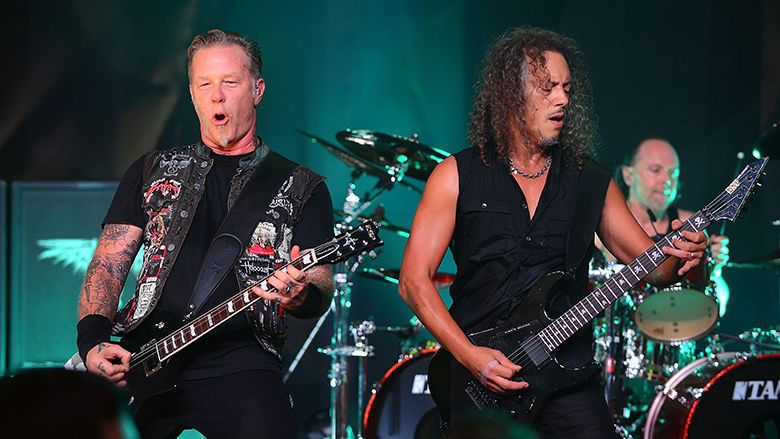
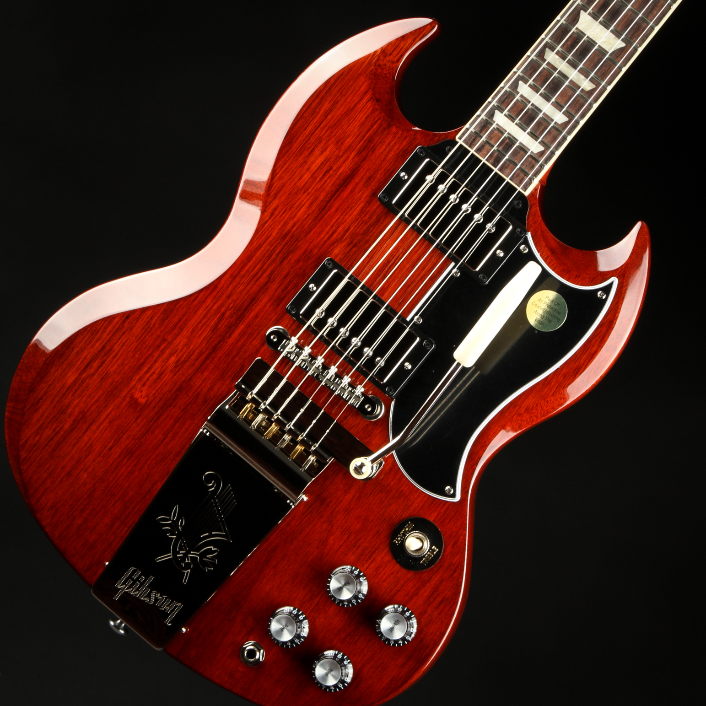
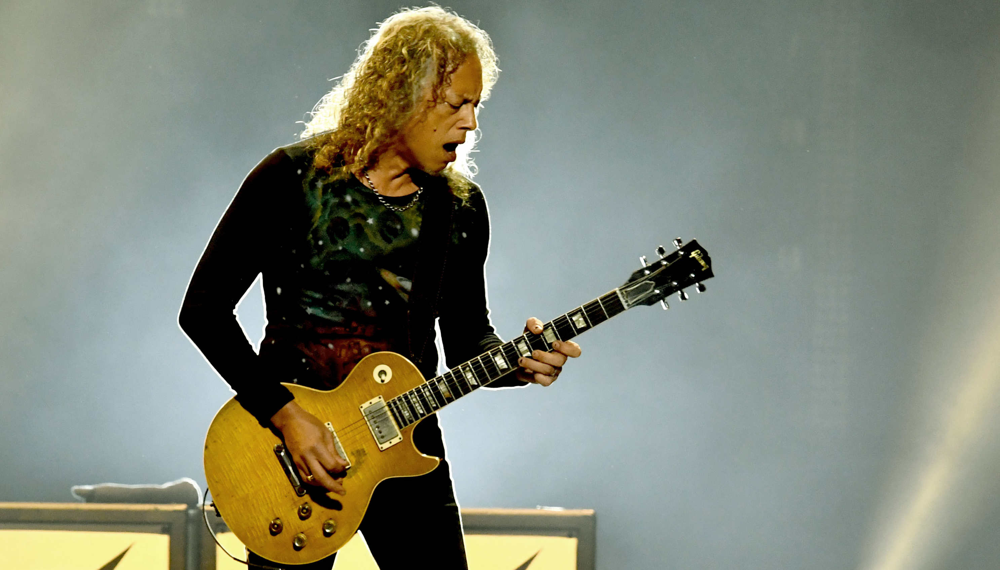

Instruments of Metallica
Metallica Is a metal band so they use metal instruments (not literally). James and Kirk play guitar, Robert plays bass and lars plays drums.

James Guitars
James Hetfield's first guitar was a Cherry SG
James Mainly used a Flying V Shape guitar during the Cliff era, before making the switch to Gibson Explorer shapes custom made by Gibson, Ken Lawrence and ESP.
James still plays on SG and Flying V shapes, however he mainly uses Explorer shapes.
Kirks Guitars
Kirks first guitar was a Montgomery Ward catalog special
These days Kirk favours the use of Custom ESP KH2 M-II guitars. His favourite guitar of all time is an ESP KH2 M-II nicknamed "The Mummy"
He is the owner of Peter Green and Gary Moore's 1959 Gibson Les Paul nicknamed “Greeny”
Lars Ulrich
Lars first drum set was a Ludwig that was given to him by his his grandmother when he was 12-13
Lars now uses a tama starclassic maple double bass

Robert Trujilo
Rob uses a Yamaha TRB5-P2 5-string bass and an Ampeg SVT-2 Pro amp